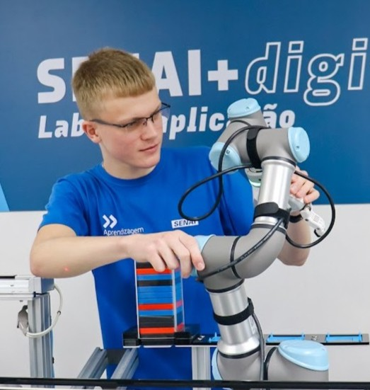

Graduação
Análise e Desenvolvimento de Sistemas
Centro Universitário UniSENAI
Em andamentoFoco em engenharia de requisitos, arquitetura de software, estruturas de dados e modelagem de soluções de software corporativas.
Desenvolvedor backend, professor e entusiasta de tecnologia, atuando com software, ensino técnico, IoT e integração de sistemas.

Atuo como professor no SENAI e desenvolvedor backend, unindo ensino técnico, software e tecnologia aplicada no dia a dia.
Meu foco está na construção de aplicações com Java e Spring Boot, além do desenvolvimento de projetos envolvendo integração de sistemas, IoT e educação tecnológica.
Centro Universitário UniSENAI
Em andamentoFoco em engenharia de requisitos, arquitetura de software, estruturas de dados e modelagem de soluções de software corporativas.
SENAI
ConcluídoFormação sólida em lógica de programação, orientação a objetos, banco de dados relacional e desenvolvimento de aplicações web completas.
SENAI / Parceiros
2023 - 2025Ciclo especializado englobando certificações em Programador de Sistemas, Assistente Técnico de TI e Eletricista Industrial.
Docente de Eletrônica, IoT e tecnologia, atuando com ensino técnico, atividades práticas em laboratório, gamificação e desenvolvimento de projetos voltados à formação tecnológica dos alunos.
Apoio acadêmico em conteúdos de algoritmos e lógica de programação, auxiliando estudantes no desenvolvimento do pensamento computacional e resolução de problemas.
Formação técnica com foco em eletrônica, desenvolvimento de sistemas e tecnologia da informação, envolvendo projetos com Java, Spring Boot, SQL, aplicações web e fundamentos de hardware e redes.
Sistema desenvolvido para supervisão e gerenciamento de uma linha de produção simulada, com monitoramento em tempo real, integração com CLPs Siemens e interface web para controle das estações industriais.
Aplicação desenvolvida para auxiliar estudantes e profissionais no cálculo e dimensionamento de eletrodutos.
API de autenticação utilizando Spring Security e JWT para controle de acesso e autenticação segura.
Sinta-se à vontade para entrar em contato para propostas de consultoria, aulas, palestras ou desenvolvimento de software especializado.